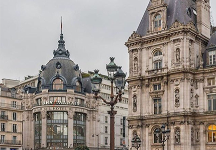

Galeries Lafayette
Der bekannte Boulevard Haussmann im 9. Arrondisement von Paris steht bei vielen ganz oben auf der Shoppingliste. Denn hier befindet sich das Weltbekannte Kaufhaus Galeries Lafayette, in dem ihr Designermode von teuren Luxuslabels, aber auch erschwinglichere Kleidungsstücke kaufen könnt. Unter der beeindruckenden Kuppel des Kaufhauses, die dieses Jahr ihr 103-jähriges bestehen feiert, macht Shoppen so richtig Spass.
Champs Elysees

Hier scheiden sch Geister. Einige Pariser raten zumShoppen auf der Champs Elysées und die anderen sind total dagegen. Fakt ist: auf der berühmten Prachtstrasse gibt es entweder die Geschäfte von Luxus-Designern oder die Flagship-Stores berühmter Lables wie z.B. H&M.
Le Bon Marché
Le Bon Marché, bis 18 Au Bon Marché, ist ein Grosswarenhaus im 7. Arrondisement und wurde 1838 von Gebrüden Videau gegründet. Le Bon Marché gilt als das erste Warenhaus der Geschichte und zählt bis heute zu den besten Warenhäuser Frankreichs. In diesem Warenhaus sind alle grossen Labels vertreten.
Le BHV

Das kaufhaus Le BHV liegt im 1. Arrondisement gegenüber vom Hotel de Ville an der Rue de Rivoli. Hier befinden sich eher die Preiswerrten Marken, doch unter diesem Dach befindet sich nicht nur Mode sondern auch Abteilungen wie Küchenartikel, Einrichtungs und Lebensmitel.
Colette
Colette war ein französischer High-Fashion-, Streetwear- und Accessoire-Händler. Der dreistöckige 8000 Quadratmeter große Concept Store befand sich in Paris und enthielt eine Ausstellungsfläche, eine Buchhandlung und eine "Wasserbar", in der mehr als 100 Marken von Mineralwasser angeboten wurden. Im Dezember 2017 wurde es endgültig geschlossen. Das Logo von Colette bestand aus zwei blauen Punkten.
Shopping im Marais Queartier
Le Marais, ein historisches Viertel, das sich über das dritte und vierte Arrondissement am rechten Ufer erstreckt, ist eines der besten Einkaufsviertel von Paris. Zahlreiche Geschäfte im Marais haben auch sonntags geöffnet, sodass die Gegend einen aufregenden Einkaufstag verspricht, egal wann Sie sie besuchen. Die besten Straßen zum Bummeln im Marais und im Haut Marais sind die Rue des Francs Bourgeois, die Rue de Saintonge, die Rue de Turenne und die Rue Vieille du Temple. In der Rue de Bretagne können Sie auch den klassischen Marché des Enfants Rouge, die älteste Markthalle von Paris, besuchen.